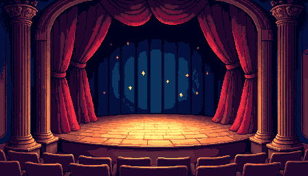
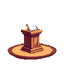
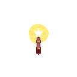
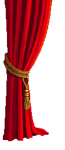

♪ WAND MAESTRO
connecting…
clock spread
—
performers
0
wand
—
▶ Start
■ Stop
✷ off
📖 how it works
🎛 editor
SCAN TO CONDUCT
phone waves the wand · or
use webcam →
🎥 webcam wand
🎥 WEBCAM WAND
⤢
✕
🪄 Wand Maestro
the orchestra plays here
Tap to begin